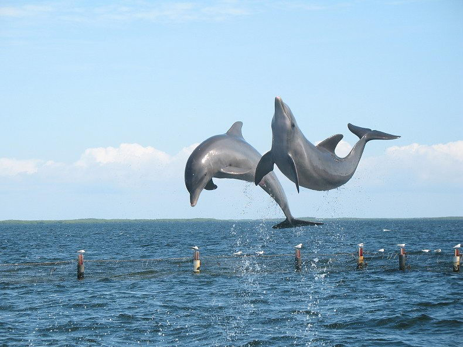

A habitat is a special place where a plant or animal lives. Just like you have a home or place to live, so do animals and plants. When we talk about an animal's or a plant's home it is more like a neighborhood than a “house”. An animal needs five things to survive in its habitat:
- food
- water
- shelter
- air
- a place to raise its young
Terrestrial Habitats
Terrestrial habitats include forests, grasslands, deserts and rainforests. They are typically defined by factors such as plant structure (trees and grasses), leaf types (eg broadleaf and needleleaf), plant spacing (forest, woodland, savanna) and climate.

Aquatic Habitats
A habitat is an area where an organism lives. An organism finds food, shelter, and everything else it needs to live within its habitat. An aquatic habitat is a habitat with water. It includes areas that are permanently covered by water and surrounding areas that are occasionally covered by water. Estuaries, rivers, and marshes are examples of aquatic habitats.